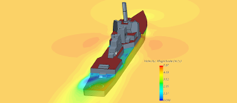

 CFD en Ingeniería Naval: ¿El fin de las maquetas?
Durante décadas, la validación del diseño hidrodinámico de buques ha dependido de canales de ensayos y maquetas físicas a escala. Sin embargo, la evolución de la Dinámica de Fluidos Computacional (CFD, por sus siglas en inglés) ha transformado profundamente la forma en que se abordan estos estudios. Hoy, la simulación digital ya no es un complemento, sino una herramienta principal y, en muchos casos, superior.
¿Qué es CFD?
El CFD es una rama de la mecánica de fluidos que utiliza métodos numéricos y algoritmos para resolver las ecuaciones de Navier-Stokes, modelando así el comportamiento de fluidos alrededor de estructuras complejas, como los cascos de los buques. No se trata solo de visualizar flujos: es ingeniería numérica aplicada, con capacidad predictiva y de optimización.
Ventajas del CFD frente a maquetas físicas
- Escala real y sin distorsión
- Reducción de costes y tiempo
- Iteraciones ágiles
- Condiciones extremas simulables
- Reproducibilidad
Caso real: MSC Meraviglia
En el diseño del crucero MSC Meraviglia, uno de los más grandes del mundo, se usaron herramientas CFD para predecir la resistencia al avance y el comportamiento hidrodinámico. Los resultados obtenidos por simulación digital coincidieron con los del canal de ensayos, validando plenamente el modelo numérico.
Una de las métricas clave fue la magnitud de velocidad en el entorno del casco, que permitió detectar zonas críticas como estelas, cavitación y separación de flujo, información vital para el diseño de hélices, timones y estabilidad direccional.
Tipos de análisis hidrodinámicos avanzados mediante CFD
La simulación CFD no solo permite evaluar la resistencia al avance de un buque, sino que abre la puerta a una gama de análisis complejos que, tradicionalmente, requerían costosas pruebas físicas:
- Porpoising: oscilación vertical en alta velocidad
- Aceleración: respuesta ante aumentos de potencia
- Presión dinámica: distribución de presión y líneas de corriente
- Balanceo (Roll): comportamiento lateral del buque
- Olas de proa: interacción casco-oleaje frontal
- Giro (Turning): comportamiento en maniobras
Conclusión
Gracias al CFD, los ingenieros navales ahora pueden anticipar y optimizar con gran precisión el rendimiento del buque en diversas condiciones reales —y extremas— sin necesidad de construir prototipos físicos. Esta capacidad no solo mejora la seguridad y la eficiencia, sino que también reduce significativamente los costes de desarrollo.
🔄 En vez de construir primero para validar después, ahora diseñamos, optimizamos y validamos virtualmente… y solo entonces se construye.
El canal de ensayos sigue siendo valioso como herramienta de validación final, pero el CFD ha llegado para liderar el proceso desde las primeras fases de diseño. Es el nuevo estándar de la innovación naval.
#IngenieríaNaval #SimulaciónCFD #DiseñoDeBuques #TecnologíaNaval